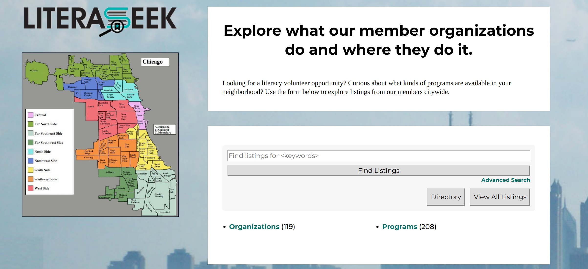
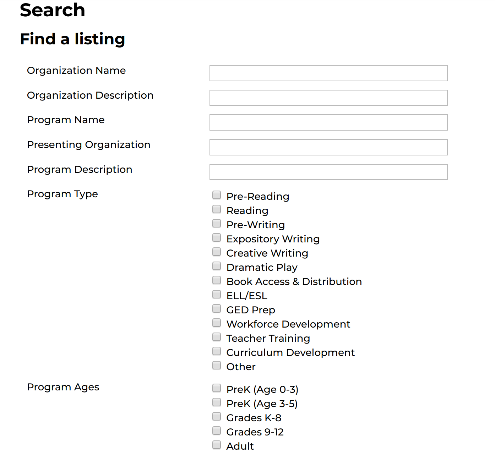
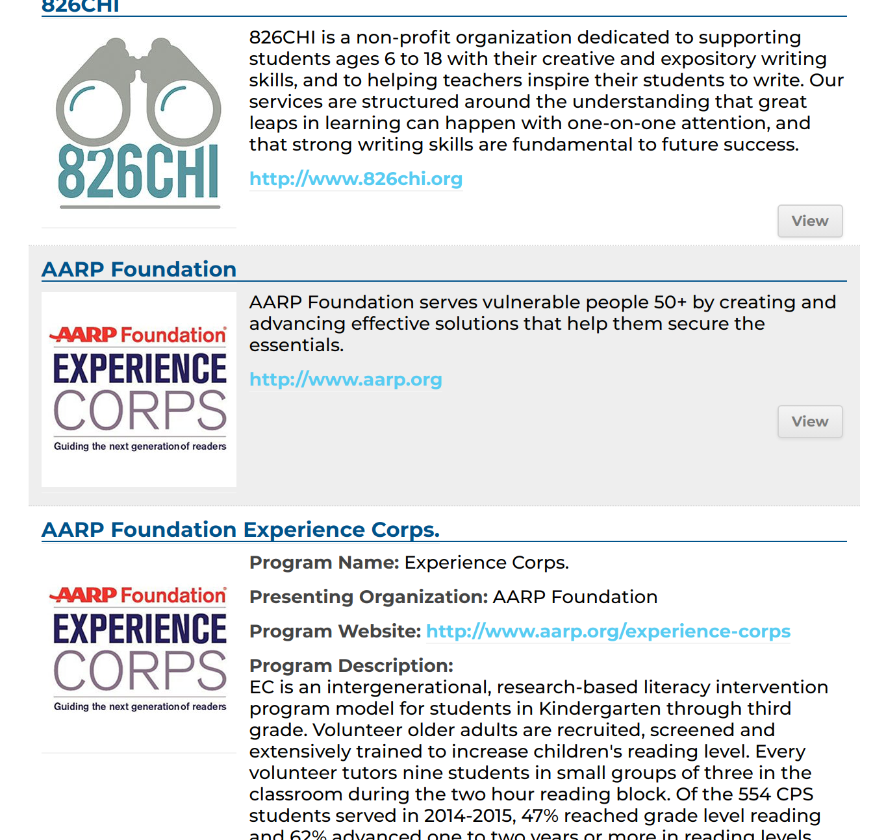

My ChiPy Blog
A series of blog posts about my time as a ChiPy Mentee. Check it out!
My ChiPy Blog Post 1 - Featuring Python, Flask, & TDD
Its been over a year since I graduated from Actualize Coding Bootcamp and I still feel like I have just scratched the surface of software development. Don’t get me wrong. I’ve learned a TON over the course of this past year, created things I never thought I would be able to, and made an incredibly scary yet exhilarating career pivot. That being said, I know there is still so much more to learn and I am super excited to be able to do that with the Chicago Python Mentorship Program this fall!
>The Project
My project idea for this program is pretty straightforward. I am recreating a organization/resource search tool that my current workplace – the Chicago Literacy Alliance (CLA) - has on their website. The CLA is an association of more than 120 organizations who work to help meet literacy needs for people of all ages and backgrounds. One of the main focuses of the CLA is to connect these member organizations to each other. An easy to use, interactive map and search tool is a great asset to have for the organization and its members. Unfortunately, as you can see below, the current version of Literaseek in need of a overhaul.
  I plan to make my version of Literaseek much more user friendly, more informative, and more accessible to folks of various literacy levels. My main audiences for this app are students looking to find literacy programs and literacy organizations looking to connect with one another. Some key features I want to include are:
- An interactive map the user can use to zoom in an out of Chicago to see the literacy programs and organizations in their area.>
- An easy to use filter that allows the user to narrow their search based on program types, ages and proximity to schools, neighborhoods, and zipcodes.
- A guided search feature that can walk users through a few simple questions to make the filtering process easier. Using a large search tool can become quickly burdensome for folks with low literacy.
- Buttons throughout the page that will read the text to the user.
In addition to this, I hope to dive a bit into web scrapping and see what program and organizational information I can pull in an automated fashion. Luckily for me, I have a lot of this data provided. However, a common problem with resource websites and manuals is that they are incredibly difficult to keep up to date since program and organizational information can change year by year. Even if I were able to extract contact information from a variety of organization websites – that could prove to be incredibly helpful in keeping this up to date!
I definitely have plenty to think about and to get working on! My first two meetings with my mentor Ben have been incredibly helpful. He’s been really great at explaining old and new concepts. One of my main goals of this program – outside of building an awesome literacy resource search app – is to strengthen my understanding of structuring and writing good code. Ben seems like a great resource for this and has already suggested some great reads such as Clean Code by Robert Martin and gave me a great intro to the SOLID Principals (which I hope to write a future blog post about when I am able to wrap my head more around the Liskov Substitution Principle).
Adventures with TDD
Another concept my mentor and I have discussed, and something he suggests I do going forward, is using TDD – or Test Driven Development. This was a concept I worked with and was introduced to in my bootcamp.
The concept goes something like this – TDD is a development process where you write your tests or test cases before you write the actual code.
In order to understand TDD, it is important to first understand the value of testing code. When you are working on a project, it is easy to just jump right into the code and start writing the features. Doing this without writing any tests, however, means it can be hard for you to be sure your code is operating exactly as you intended and bugs may start to appear in production. Additionally, writing tests as you go ensures that by the end of it, you have tests for most of your code – ultimately making it less buggy.
In a nutshell, the TDD process looks like this:
- Write a test
- Run the test (and watch it fail)
- Write the feature code
- Run the test again (and watch it pass :-D )
- Refactor the code
- Repeat
I found this great graphic as well:

With Ben helping me walk through it, I was able to get a test up and running on my app! I am using the Pytest-flask plugin per Ben’s suggestion (there is also a Pytest plugin for Django). After writing a couple more tests on my own, I am already seeing the benefits of the TDD framework. Not only does it make sure your code is working exactly how you want it to (and not breaking other pieces of code), it helps you be very intentional about each feature and piece of code you put into your application. If you don’t have a test for it, you don’t need it. As someone who finds themselves down a variety of rabbit holes often – this type of intentional coding is something that I think can definitely help me in structuring my code.
While I am seeing the benefits, it is ultimately more time consuming (in the beginning of app development anyways) and will take some effort to learn well. I will try my best to be diligent test writer. I am in high hopes that highlighting this in my blog will make me more likely to stay on top of it!
Anyway, that is it for now! Thanks for sticking with me and many thanks to the ChiPy Mentorship team and my mentor Ben for taking the time and energy to help me grow and develop my python skill!